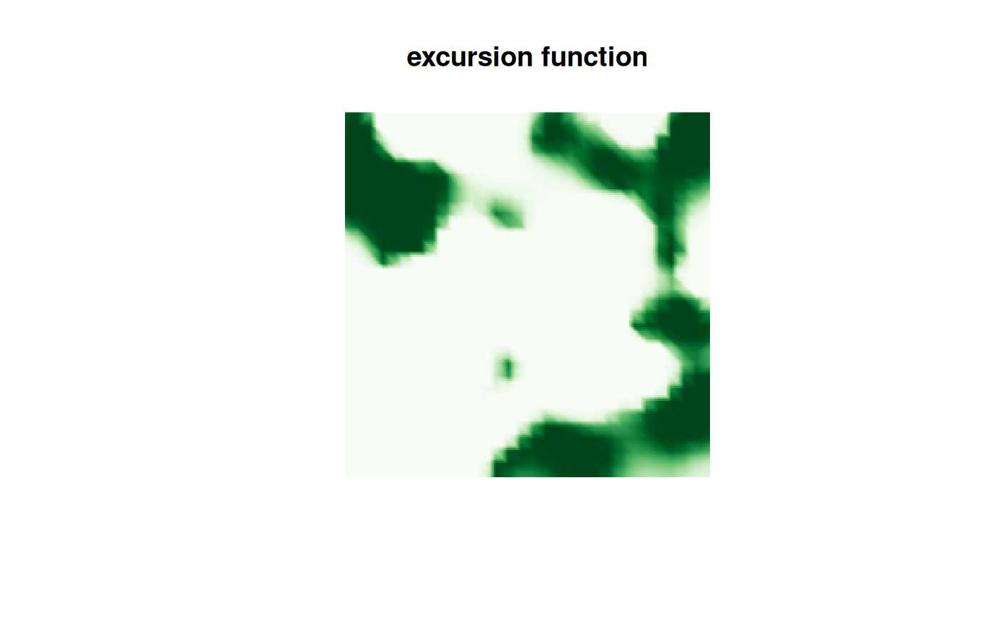
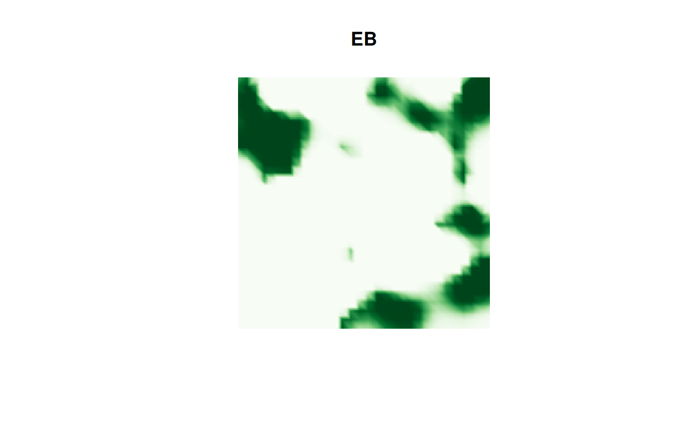
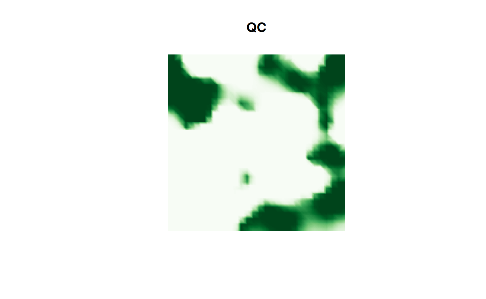
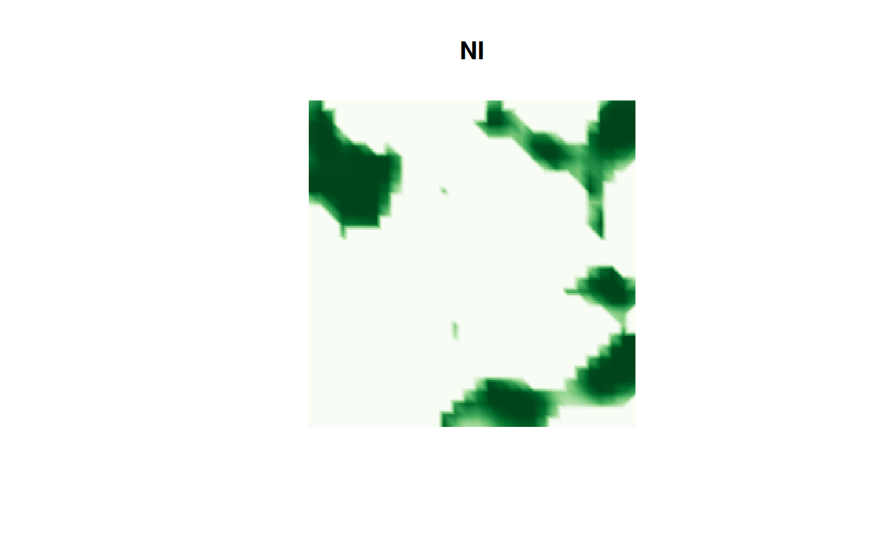
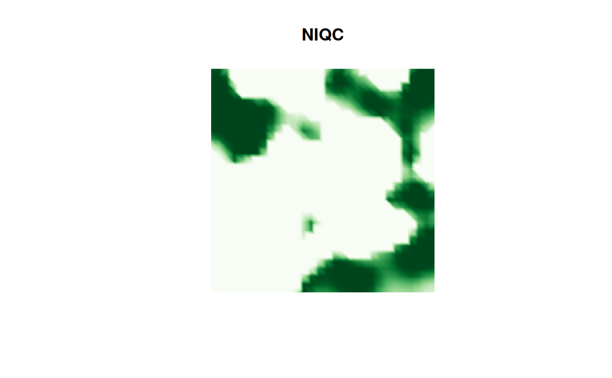

Introduction
The excursions package can also be used to analyze
results obtained using inlabru. An advantage with
inlabru is that it usually simplifies the model
specification compared with plain INLA. To analyze
inlabru outputs, the functions
excursions.inla, simconf.inla and
contourmap.inla can be used. Let us illustrate this using
simulated data.
Let us generate some data
n.lattice <- 30
x <- seq(from = 0, to = 10, length.out = n.lattice)
lattice <- fm_lattice_2d(x = x, y = x)
mesh <- fm_rcdt_2d_inla(lattice = lattice, extend = FALSE, refine = FALSE)
sigma2.e <- 0.1
n.obs <- 100
obs.loc <- cbind(runif(n.obs) * diff(range(x)) + min(x),
runif(n.obs) * diff(range(x)) + min(x))
Q <- fm_matern_precision(mesh, alpha = 2, rho = 3, sigma = 1)
x <- fm_sample(n = 1, Q = Q)
A <- fm_basis(mesh, loc = obs.loc)
Y <- as.vector(A %*% x + rnorm(n.obs) * sqrt(sigma2.e))We now fit the model using rSPDE and
inlabru. If we want to obtain an excursion set of the
linear predictor evaluated at the mesh, the simplest option is to define
a likelihood component in the bru call which contains
NA observations at the mesh locations. We then give this
component a tag (pred below) so that we can access these
later.
rspde_model <- rspde.matern(mesh = mesh, nu = 1.5)
data <- data.frame(x1 = obs.loc[,1], x2 = obs.loc[,2], y = Y)
coordinates(data) <- c("x1","x2")
#data for prediction locations
data.prd <- data.frame(x1 = mesh$loc[,1],
x2 = mesh$loc[,2],
y = rep(NA, dim(mesh$loc)[1]))
coordinates(data.prd) <- c("x1","x2")
cmp <- y ~ Intercept(1) + field(coordinates, model = rspde_model)
result_bru <- bru(~ Intercept(1) + field(coordinates, model = rspde_model),
like(y~., family = "normal", data = data),
like(y~., family = "normal", data = data.prd, tag = "prd"),
options=list(control.compute=list(return.marginals.predictor=TRUE),
num.threads = "1:1"))We can now compute excursion sets using the
excursions.inla function. As no stack object is constructed
when using inlabru, we use the argument
name = "APredictor" to tell the function that we are
interested in the linear predictor. We then use the
bru_index function to obtain the indices for the relevant
part of the predictor. In this case, we want the indices which
correspond to the likelihood component which we gave the tag
"pred" above, so the call looks as follows.
res.qc_bru <- excursions.inla(result_bru, name = "APredictor",
ind = bru_index(result_bru, "prd"),
alpha = 0.99, u = 0,
method = "QC", type = ">",
prune.ind = TRUE,
max.threads = 2)Note that we here set prune.ind = TRUE which tells the
function that we want the result object only evaluated at the indices
specified by the ind argument. We can now obtain a
continuous domain representation through the continuous
function
sets <- continuous(res.qc_bru, mesh, alpha = 0.1)Finally, we can plot the results
cmap.F <- colorRampPalette(brewer.pal(9, "Greens"))(100)
proj <- fm_evaluator(sets$F.geometry, dims = c(300,200))
image(proj$x, proj$y, fm_evaluate(proj, field = sets$F),
col = cmap.F, axes = FALSE, xlab = "", ylab = "", asp = 1,
main = "excursion function")
comparison of the different types of approximations
Above we used the QC method to compute the set. Let us
now try the other available options and compare their timings and
results.
t.EB <- system.time(
res.EB <- excursions.inla(result_bru, name = "APredictor",
ind = bru_index(result_bru, "prd"),
alpha = 0.99, u = 0,
method = "EB", type = ">",
prune.ind = TRUE,
max.threads =2 ))
t.QC <- system.time(
res.QC <- excursions.inla(result_bru, name = "APredictor",
ind = bru_index(result_bru, "prd"),
alpha = 0.99, u = 0,
method = "QC", type = ">",
prune.ind = TRUE,
max.threads =2 ))
t.NI <- system.time(
res.NI <- excursions.inla(result_bru, name = "APredictor",
ind = bru_index(result_bru, "prd"),
alpha = 0.99, u = 0,
method = "NI", type = ">",
prune.ind = TRUE,
max.threads =2))
t.NIQC <- system.time(
res.NIQC <- excursions.inla(result_bru, name = "APredictor",
ind = bru_index(result_bru, "prd"),
alpha = 0.99, u = 0,
method = "NIQC", type = ">",
prune.ind = TRUE,
max.threads =2))The computation time for the different methods are
print(data.frame(time = c(t.EB[3], t.QC[3], t.NI[3], t.NIQC[3]),
row.names = c("EB", "QC", "NI", "NIQC")))
#> time
#> EB 3.803
#> QC 3.961
#> NI 37.170
#> NIQC 41.847We can see that the EB and QC methods have
similar computation times and that NI and NIQC
take longer. Let us now plot the corresponding sets, we start with the
EB result:
image(proj$x, proj$y, fm_evaluate(proj,
field = continuous(res.EB,
mesh,
alpha = 0.1)$F),
col = cmap.F, axes = FALSE, xlab = "", ylab = "", asp = 1,
main = "EB")
Then the QC result:
image(proj$x, proj$y, fm_evaluate(proj,
field = continuous(res.QC,
mesh,
alpha = 0.1)$F),
col = cmap.F, axes = FALSE, xlab = "", ylab = "", asp = 1,
main = "QC")
Then the NI result:
image(proj$x, proj$y, fm_evaluate(proj,
field = continuous(res.NI,
mesh,
alpha = 0.1)$F),
col = cmap.F, axes = FALSE, xlab = "", ylab = "", asp = 1,
main = "NI")
and finally the NIQC result:
image(proj$x, proj$y, fm_evaluate(proj,
field = continuous(res.NIQC,
mesh,
alpha = 0.1)$F),
col = cmap.F, axes = FALSE, xlab = "", ylab = "", asp = 1,
main = "NIQC")